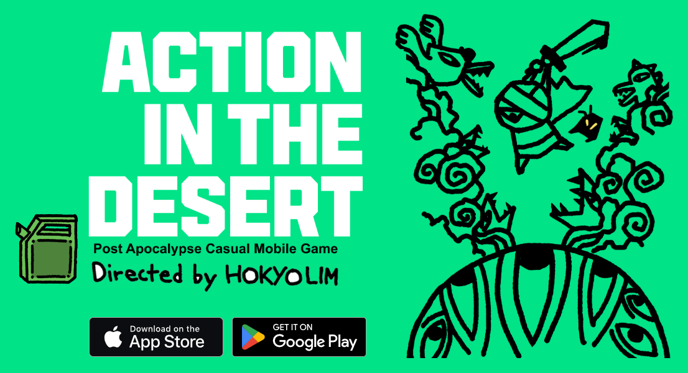
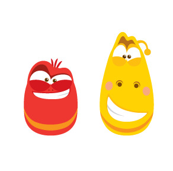
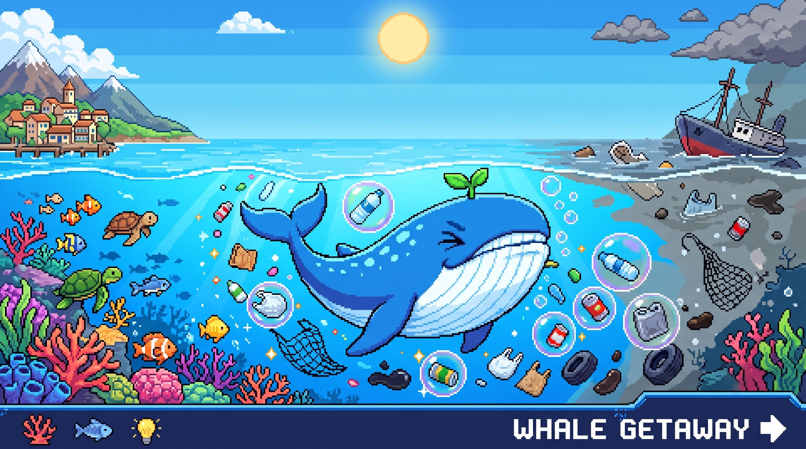
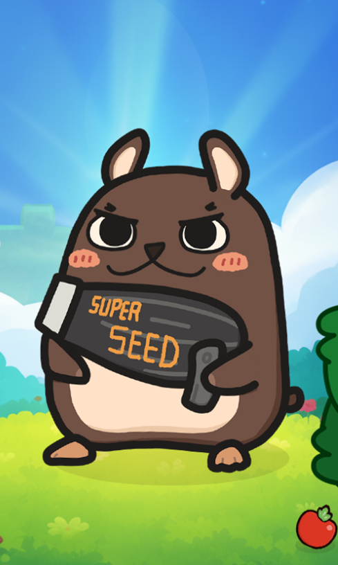

// game programmer
장인호 Inho Jang
기획 및 아트와의 협업 효율을 고민하고, 새로운 기술을 탐구하는 게임 프로그래머
스토리텔링이 이끈 개발자의 삶. 저는 원래 스토리텔링이 너무 좋아서 개발을 시작했습니다. 그 이야기의 강력한 힘에 매료되어 있으며, 결국 게임이라는 가장 역동적이고 입체적인 매체를 통해 유저들의 마음에 깊은 울림을 주는 스토리를 기술로서 완벽히 풀어내는 것을 가장 큰 목표로 삼고 있습니다.
개발 프로세스 효율화에 관심이 많습니다. AI 도구를 코드 흐름 분석과 기술 문서화 보조에 영리하게 활용하고 있으며, 더 나아가 Unity, Unreal, Notion 등 환경에 맞게 연계하는 개발 효율화 방식들을 관심 있게 연구하고 스터디를 적극적으로 이어가고 있습니다.
Tech Stack
Education
한국공학대학교 졸업
게임공학 계열 전공 (2014.03 - 2020.02)
Experience
총 2년 6개월
Tidal Flats — Game Programmer
2023.04 – 2023.11유니티 모바일 게임 프로젝트의 초기 아키텍처 셋업부터 릴리즈 및 라이브 서비스 단계까지 전 과정 기여. 클라이언트-서버 간 패킷 통신 기반의 인게임/아웃게임 UI 매니지먼트 및 데이터 동기화 시스템 전반을 전담 개발.
TubaN — Technical Director
2022.06 – 2023.01UE5 기반 애니메이션 제작 파이프라인 구축 및 워크플로우 생산성 향상을 위한 자동화 에디터 툴 및 플러그인 전담 개발.
JIH — Director
2019.05 – 2020.06언리얼 엔진 4 환경에서 멀티플레이어 생존 게임의 캐릭터 상호작용 시스템 및 전반적인 게임플레이 핵심 메커니즘 설계.
Core Projects
실무 및 주요 협업에서 메인 개발자로 담당한 핵심 프로젝트입니다.

Mega Road — Tidal Flats
2023.04.19 – 2023.11.27- · 클라이언트-서버 간 패킷 통신에 대응하는 인게임 및 아웃게임 UI 전반 구현
- · UI 데이터 바인딩 및 화면 간 제어권 조율을 위해 MVC 디자인 패턴 적용
- · AppLovin MAX SDK 연동 및 관련 UI 흐름 개발
- · SVN 및 Git을 활용한 형상 관리, Jenkins 기반의 빌드 자동화 환경 운용

Larva — TubaN
2022.06.20 – 2023.01.20- · 언리얼 엔진 5 환경에서 애니메이션 워크플로우 지원용 확장형 에디터 플러그인 C++ 설계 및 구현
- · C++ 및 Python 스크립트 연동 기반의 에셋 가상화 및 일괄 임포트/익스포트 파이프라인 개발
- · 시퀀서 데이터 추출 자동화 및 에셋 네이밍 규칙 검증(Naming Convention Check) 에디터 툴 구현
- · 사내 웹서버 API 연동을 통한 에피소드·씬·컷별 캐릭터 및 프랍 에셋의 제작 상태(Status) 관리 시스템 구축
- · Git을 활용한 프로젝트 소스 코드 및 에디터 플러그인 형상 관리
White Paradise — JIH
2019.05.20 – 2020.06.01- · 언리얼 엔진 4 기반 멀티플레이어 생존 게임의 핵심 플레이 메커니즘 설계 및 C++ 구현
- · Dedicated 서버 엔진 빌드 및 AWS(Amazon Web Services) 클라우드 환경 배포를 통한 멀티플레이어 환경 구현
- · 디렉터로서 가이드라인 정의 및 개발 마일스톤 관리
AX Projects
기획부터 빌드, Itch.io 배포까지 단독으로 진행한 단기 게임 프로토타입입니다.

Whale Getaway — Blue Horizon
2026.06 – 2026.07- · 버블(포획) · 도넛(고정 플랫폼) · 대시 세 가지 스킬이 서로 다른 역할로 맞물리는 오염물 정화 코어 루프를 설계·구현
- · 3600px 폭의 카메라 추적형 절차적 바다 월드, 굴곡진 해저 지형, 풍선처럼 튕기는 원형 충돌 처리를 직접 구현
- · 튜토리얼 → 4단계 페이즈 진행 → 게이지/타이머 기반 게임오버까지 이어지는 온보딩·난이도 곡선을 1인 완결형으로 제작

HamsThor — Spin to Win...ch!
2026.06.29 – 2026.07.14- · 윈치(반지름-각속도 보존) · 접선 방향 릴리즈 · 35px 정밀 락온으로 이어지는 원운동 사출 코어 루프를 순수 물리 공식으로 직접 구현
- · 로비 → 3단계 실전 튜토리얼 → 본게임으로 이어지는 AppState FSM을 실제 게임 물리 위에 얹어 온보딩 설계
- · 무한 절차적 앵커 생성, 난이도 램프, 장애물 기믹, BEST 고도 기록까지 1인 완결형으로 제작

Germ-y Laundry — Hyper UX & Balance Edition
2026.06.02 – 2026.06.03- · 세탁 드럼 회전 + 대시 회피 코어 루프를 기획부터 빌드까지 2일 내 단독 구현
- · 3단계 난이도 밸런싱과 튜토리얼, 생존시간 기반 결과 공유 화면까지 단기간 완성

No More Prizes
2026.05.21 – 2026.05.28- · 세트 효과 · 인벤토리 · Moss Drive 레벨링을 갖춘 수집형 코어 루프를 1주일 내 단독 구현
- · 도감 / 기록 모달, 커스텀 커서 · 볼륨 UI 등 디테일한 인터랙션으로 완성도 확보

AX Defense 03
v3.0 Stable- · AI 도구를 활용한 고속 개발 프로세스 적용
- · 가중치 매핑 기반 경로 탐색 및 웨이브 루프 기능
- · 타일형 디펜스 게임 핵심 메커니즘 확장

AX Defense 02
v2.0 Stable- · AI 생성 연계 다양한 몬스터 패턴 구현
- · 웨이브 스케줄러 시스템 빠른 기능 구현
- · 프로토타입 테스트 및 완성도 향상
Side Projects
개인 개발 연구실: 독자적으로 다듬어 온 프로젝트 리스트입니다.
AX_Defense_01
v1.0 BasicAX Framework v1 기반 프로젝트. 유니티 그리드 좌표 배치 및 마우스 클릭 레이캐스트 기반의 타일형 디펜스 초기 핵심 메커니즘 검증작.
AX Framework v1
Architecture앞선 UI 중심 개발 경험을 바탕으로 정립한 인하우스 고속 개발용 커스텀 프레임워크. UI 매니저, 데이터 직렬화, 이벤트 채널 등 AI 보조 도구와 연계해 빠르게 살을 붙일 수 있는 베이스 시스템.
AX_Clicker_01
v1.0 BasicAX Framework v1 제작의 발판이 된 UI 메인 프로토타입. 캐주얼 방치형 게임의 화면 간 데이터 흐름과 인게임 루프를 검증하고, 클릭 시 발생하는 화면 이펙트 처리에 오브젝트 풀링을 적용한 프로젝트.
UE_Multiplayer_Dedicated
Multiplayer Core언리얼 엔진 데디케이티드 서버 가동 및 멀티플레이어 환경 테스트 프로젝트. C++ 및 블루프린트를 활용한 RPC(Remote Procedure Call) 패킷 전송 및 유저 세션 관리 기능 구현 스터디.
Mega Road Clone - Unity
Optimization Core실무 시스템을 기반으로 한 뱀서라이크 장르의 R&D 프로젝트. UnityEngine.Pool 기반의 오브젝트 풀링 최적화, Addressable Asset System을 활용한 메모리 및 에셋 관리, 리플렉션/컴포넌트 자동 맵핑을 통한 UI Bind 구조 개선 적용.
Mega Road Clone - Unreal
Cross Porting유니티 기반의 원본 게임 로직과 UI 구조를 언리얼 엔진 5 환경의 C++ 및 블루프린트 구조로 이식하는 마이그레이션 스터디.
Isaac Clone - OpenGL
Low-Level Graphics상용 엔진 없이 C++ 및 OpenGL API를 사용하여 2D 텍스처(이미지) 매핑, 기본 이동 및 충돌 처리를 테스트한 아이작 스타일 프로토타입.
Shader - OpenGL
Shader ProgrammingGLSL을 활용한 기본 버텍스/프래그먼트 셰이더 연산 테스트. 화면에 원을 그리거나 기본적인 색상 변경 이펙트를 구현한 기초 테스트 프로젝트.